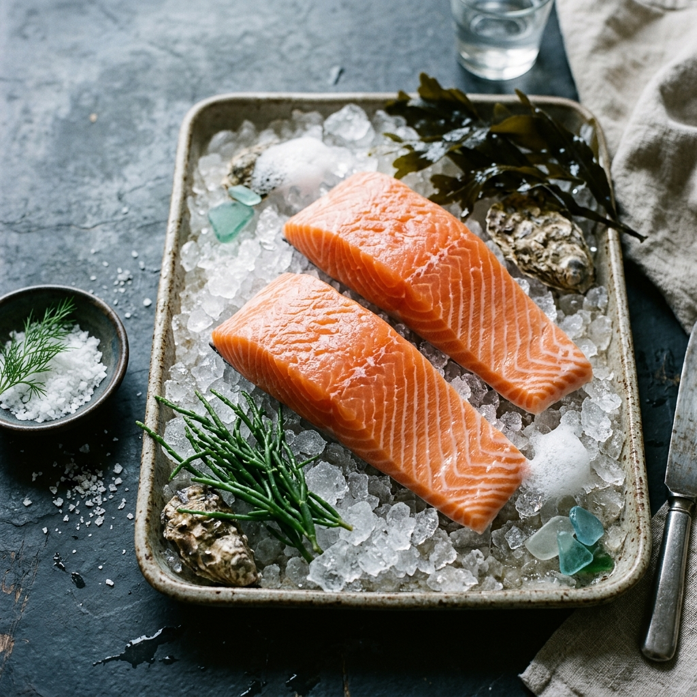

FROM RESPONSIBLE WATERS TO BETTER TABLES.
Premium seafood sourced with greater transparency, responsible practices and a clear path from ocean to table.
WHERE EVERY CATCH HAS A STORY.
We believe that better seafood begins long before the catch. Our approach centers on partnering with conscious fisheries and responsible aquaculture operations that prioritize ocean health.
By maintaining strict cold-chain discipline and cultivating direct supplier relationships, we deliver exceptional freshness and transparency to premium hospitality businesses.
45+
100%
PREMIUM SPECIES
Explore our core selection of responsibly sourced seafood, selected for premium culinary applications.

Atlantic Salmon
Rich, buttery texture with deep color. Farmed using advanced responsible aquaculture practices ensuring low environmental impact.
View Species DetailsOCEAN TO TABLE
Our transparent supply chain ensures quality, freshness, and accountability at every stage.
01 SOURCE
Responsible wild capture or aquaculture.
02 VERIFY
Quality check and lot registration.
03 CHILL
Immediate temperature control applied.
04 DELIVER
Monitored cold-chain distribution.
BETTER SOURCING STARTS BEFORE THE CATCH.
Our commitment to sustainability isn't an afterthought—it is the foundation of our supply chain. We work exclusively with suppliers who practice responsible fishing and progressive aquaculture.
By aligning with seasonal sourcing cycles and maintaining strict traceability protocols, we help premium kitchens reduce unnecessary waste while serving exceptional seafood.
Learn About Our Practices